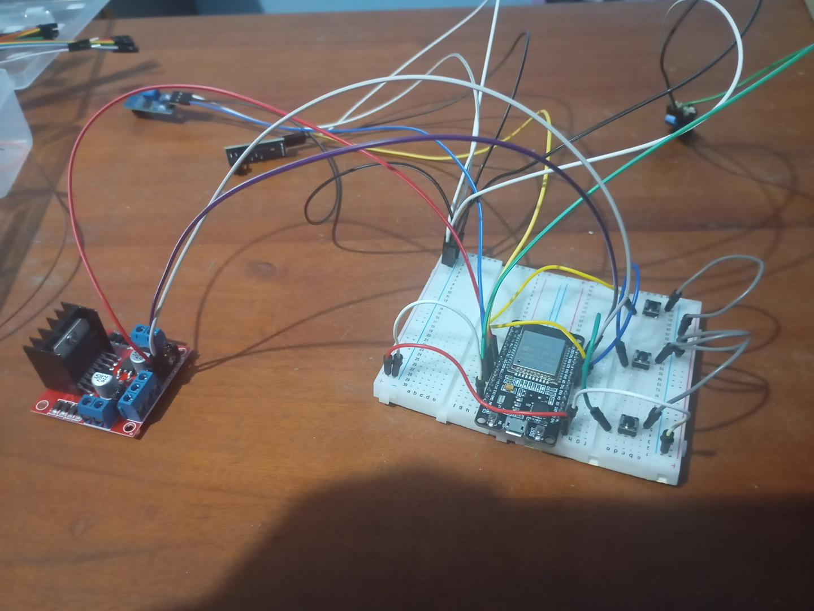
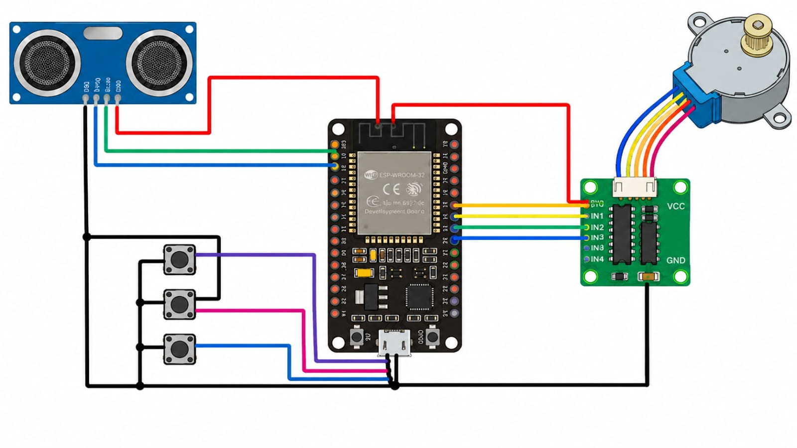

01. Seleção do andar
O usuário escolhe o nível desejado por meio de um botão ou de uma interface de controle.
Uma demonstração de como a programação pode controlar a seleção de andares em uma maquete automatizada.
O elevador inteligente do projeto representa um sistema de transporte entre diferentes níveis da casa. A proposta é demonstrar como comandos enviados pelo usuário podem ser utilizados para selecionar um andar e iniciar uma ação programada.
O funcionamento físico depende dos componentes instalados, do mecanismo de movimentação e da programação desenvolvida pela equipe.
Infelizmente o Elevador não deu certo, por esse motivo não conseguimos por a foto da estrtura do elevador


[foto do inicio do projeto do elevador]
O usuário escolhe o nível desejado por meio de um botão ou de uma interface de controle.
A programação recebe a solicitação e verifica qual ação deve ser executada.
O circuito de controle envia o comando necessário ao mecanismo de movimentação, conforme o projeto.
O sistema pode indicar a posição alcançada por meio de sensores, controles ou outra lógica implementada pela equipe.
[ADICIONAR LINK DO VÍDEO motor DO ELEVADOR]
O vídeo mostra como é o porjeto de montagem do elevador que apesar de não ter dado certo o resultado final, os comandos e e o interior do projeto estava dando certo.
Assistir ao vídeoO projeto representa um protótipo de elevador por um microcontrolador, no caso o ESP32. Para o deslocamento entre os andares foi utilizado o motor de passos(Step Motor) e seu driver, permitindo o deslocamento da cabine Sendo utilizado 3 botões para representar cada andar da casa (Térreo 1°Andaa e 2°Andar), quando um dos botões são pressionados, o Esp recebe o comando e movimenta o motor até que a cabine esteja na distância desejada Para encontrar a localização da cabine foi utilizado um sensor ultrassônico HC-SR04, localizado no topo do elevador responsável por medir a distância do topo até a cabine, permitindo o sistema saber em qual Andar está localizado a cabine, e assim comparar com a medidas do andar solicitado Na parte da programação, foi desenvolvida no Arduíno IDE usando linguagem C++, dando sentido aos cliques em cada botão, monitorar a cada tick o sensor ultrassonico e controlar o motor de passo
A programação define como os comandos são recebidos e quais ações devem acontecer. O código real será apresentado nesta seção depois de ser fornecido pela pessoa responsável pelo elevador.
#include <Stepper.h>
// =====================
// MOTOR DE PASSO
// =====================
const int passosPorRevolucao = 2048;
Stepper elevador(passosPorRevolucao, 19, 5, 18, 15);
// =====================
// SENSOR ULTRASSÔNICO
// =====================
const int trigPin = 14;
const int echoPin = 34;
// =====================
// BOTÕES
// =====================
const int btnTerreo = 25;
const int btnAndar1 = 26;
const int btnAndar2 = 27;
// =====================
// ALTURAS DOS ANDARES
// (ajuste depois)
// =====================
float terreo = 50.0;
float andar1 = 35.0;
float andar2 = 20.0;
// Destino atual
float destino = terreo;
// =====================
// SETUP
// =====================
void setup() {
Serial.begin(115200);
pinMode(trigPin, OUTPUT);
pinMode(echoPin, INPUT);
pinMode(btnTerreo, INPUT_PULLUP);
pinMode(btnAndar1, INPUT_PULLUP);
pinMode(btnAndar2, INPUT_PULLUP);
elevador.setSpeed(8);
Serial.println("================================");
Serial.println("ELEVADOR INTELIGENTE INICIADO");
Serial.println("================================");
}
// =====================
// LOOP
// =====================
void loop() {
// Botão térreo
if (digitalRead(btnTerreo) == LOW) {
destino = terreo;
Serial.println("Chamado: TERREO");
delay(300);
}
// Botão andar 1
if (digitalRead(btnAndar1) == LOW) {
destino = andar1;
Serial.println("Chamado: ANDAR 1");
delay(300);
}
// Botão andar 2
if (digitalRead(btnAndar2) == LOW) {
destino = andar2;
Serial.println("Chamado: ANDAR 2");
delay(300);
}
float atual = lerDistancia();
Serial.print("Atual: ");
Serial.print(atual);
Serial.print(" cm | Destino: ");
Serial.print(destino);
Serial.println(" cm");
float tolerancia = 3.0;
// Muito abaixo do destino
if (atual > destino + tolerancia) {
// SOBE
elevador.step(20);
}
// Muito acima do destino
else if (atual < destino - tolerancia) {
// DESCE
elevador.step(-20);
}
// Chegou
else {
pararMotor();
}
delay(50);
}
// =====================
// SENSOR
// =====================
float lerDistancia() {
digitalWrite(trigPin, LOW);
delayMicroseconds(2);
digitalWrite(trigPin, HIGH);
delayMicroseconds(10);
digitalWrite(trigPin, LOW);
long duracao = pulseIn(echoPin, HIGH, 30000);
if (duracao == 0) {
return 999;
}
return duracao * 0.034 / 2.0;
}
// =====================
// PARAR MOTOR
// =====================
void pararMotor() {
digitalWrite(19, LOW);
digitalWrite(5, LOW);
digitalWrite(18, LOW);
digitalWrite(15, LOW);
}
Durante o desenvolvimento, podem surgir desafios relacionados ao movimento, à alimentação elétrica, ao alinhamento do mecanismo e à interpretação dos comandos. Nesta parte, registraremos as dificuldades realmente encontradas e as soluções aplicadas pela equipe.
Durante o desenvolvimento do protótipo surgiram alguns desafios, mas todos foram resolvidos com ajustes no projeto. O principal foi a calibração do sensor ultrassônico, que apresentava pequenas oscilações nas leituras e podia confundir a posição da cabine, então foi criada uma margem de tolerância na programação para evitar movimentações desnecessárias. Também houve dificuldade no controle do motor de passo, que no início estava muito lento, por isso foram feitos ajustes na programação para equilibrar velocidade e estabilidade, além da adição de uma polia para aumentar o percurso da corda no carretel. Por fim, surgiram problemas na alimentação elétrica e nas conexões do circuito, que foram resolvidos após revisar as ligações e testar cada componente individualmente, garantindo o funcionamento correto do ESP32, do driver do motor e do sensor. Mesmo sendo um protótipo em escala reduzida, o projeto conseguiu reproduzir o funcionamento básico de um elevador real, demonstrando conceitos de automação, sensores e controle embarcado.